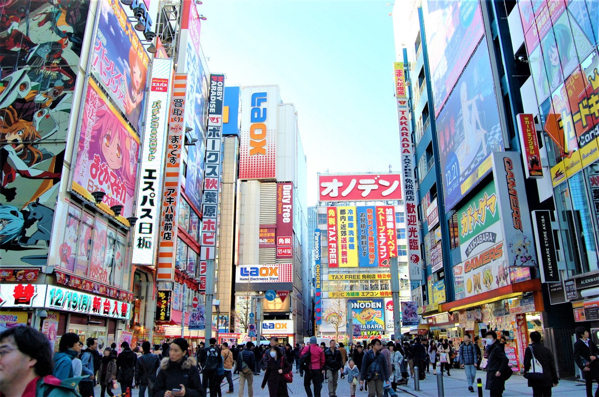

Akihabara

Akihabara (Japanese: 秋葉原) is a common name for the area around Akihabara Station in the Chiyoda ward of Tokyo, Japan. Administratively, the area called Akihabara mainly belongs to the Sotokanda (外神田) and Kanda-Sakumachō districts in Chiyoda. There exists an administrative district called Akihabara in the Taitō ward further north of Akihabara Station, but it is not the place people generally refer to as Akihabara.

Akihabara (Japanese: 秋葉原) is a common name for the area around Akihabara Station in the Chiyoda ward of Tokyo, Japan. Administratively, the area called Akihabara mainly belongs to the Sotokanda (外神田) and Kanda-Sakumachō districts in Chiyoda. There exists an administrative district called Akihabara in the Taitō ward further north of Akihabara Station, but it is not the place people generally refer to as Akihabara.
The name Akihabara is a shortening of Akibagahara (秋葉ヶ原), which ultimately comes from Akiba (秋葉), named after a fire-controlling deity of a firefighting shrine built after the area was destroyed by a fire in 1869.
Akihabara gained the nickname Akihabara Electric Town (秋葉原電気街, Akihabara Denki Gai) shortly after World War II for being a major shopping center for household electronic goods and the post-war black market.
Akihabara is considered by many to be the centre of modern Japanese popular culture and a major shopping district for video games, anime, manga, electronics and computer-related goods. Icons from popular anime and manga are displayed prominently on the shops in the area, and numerous maid cafés and some arcades are found throughout the district.